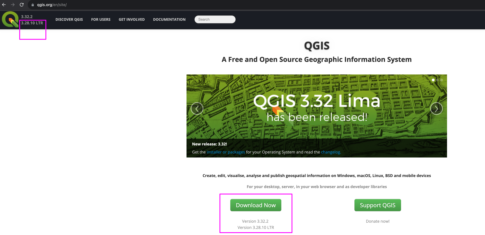
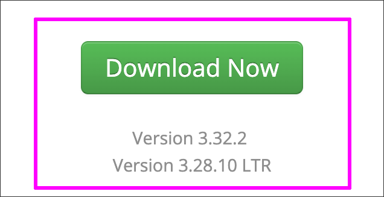
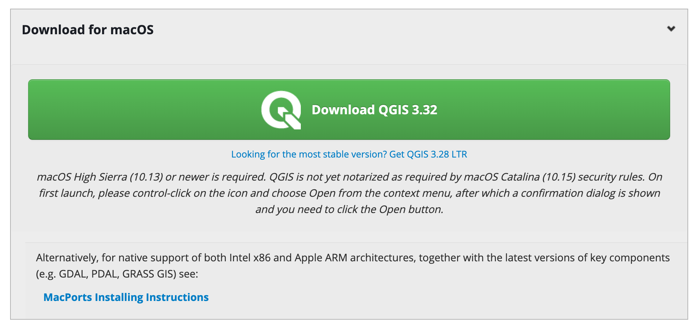
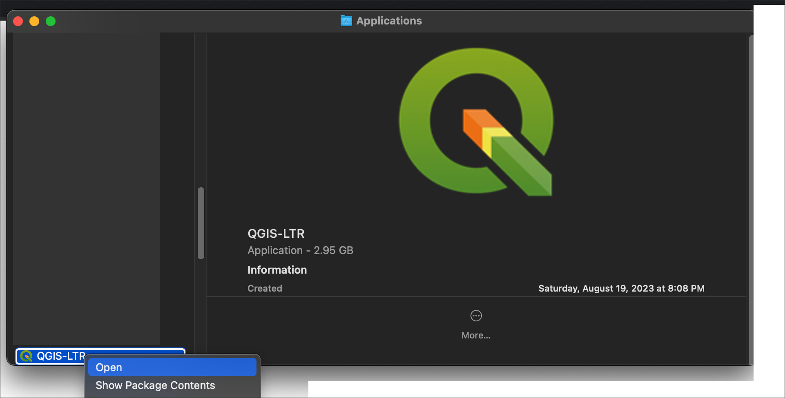
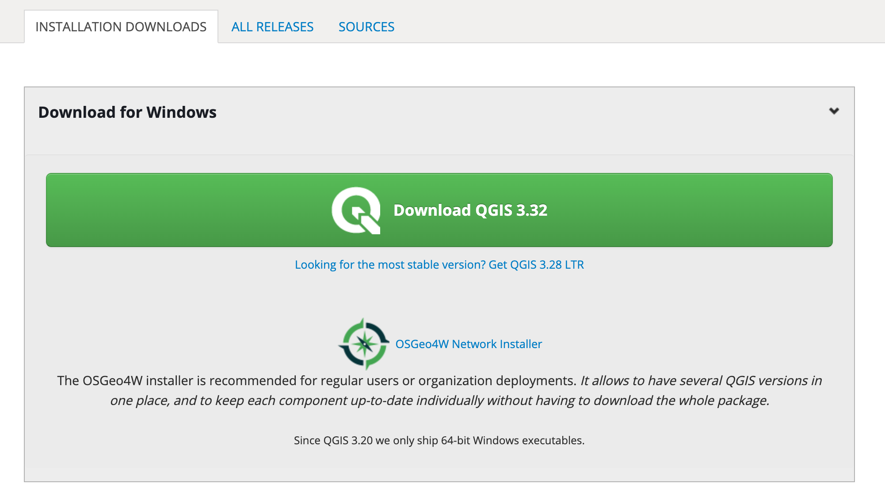
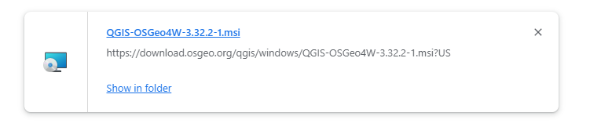
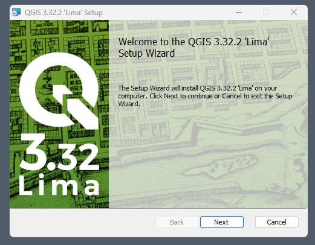

Class 1 Assignment 1: QGIS Initiation & Orientation
Spring 2025 | UENV3200 + UURB3210 | CRN: 11008 + 11009
Preamble
This first week’s assignment will encompass acquiring, accessing and manipulating both QGIS software and several vector type spatial features to produce a global scale (small scale) map, exported to PDF format. The goal of this first week is to orient to the software; gain experience with the software, and begin to work with spatial features.
This week’s class session and independent assignment will encompass the following concepts, which will be previewed during the Class 1 Lecture 1 lecture as well as the class meeting Monday 01/27 at 4pm:
- Short history of Cartography
- Situate GIS within history of Cartography
- Core spatial concepts in GIS
- Core GIS terminology
- QGIS as robust GIS software
Before proceeding to your work on the first assignment, pause and watch the first week Lecture recording. In addition to Assignment 1 fundamentals, both terminology and some software items are discussed.
General Course Orientation Items for Class 1:
GIS + QGIS Orientation
- What is GIS?
- GIS stands for either Geographic Information System or Geographic Information Science. Geographic Information System typically refers to the software, like QGIS, we use to create spatial data and to investigate spatial relationships between that data. Geographic Information Science is the framework we use to ask questions about the spatial relationship between data.
- What is QGIS?
- From the QGIS website, “QGIS is a user friendly Open Source Geographic Information System (GIS) licensed under the GNU General Public License. QGIS is an official project of the Open Source Geospatial Foundation (OSGeo). It runs on Linux, Unix, Mac OSX, Windows and Android and supports numerous vector, raster, and database formats and functionalities.”
- QGIS is a desktop GIS. That means you get a program that opens up on your computer as a window with buttons you can click, forms you can fill out to do tasks, and it’s generally a visual interactive experience (as opposed to commandline programming in a terminal). Often this kind of interface is called a Graphical User Interface or GUI (often pronounced “gooey”) for short.
- QGIS is open source. That means the code is available for you to read or modify, should you choose to, but you don’t have to. What’s the advantage of this? It means anyone can make fixes if something is wrong or anyone can add new features. You don’t have to wait for a paid developer to add something.
- QGIS is an official project of the Open Source Geospatial Foundation (OSGeo). “The Open Source Geospatial Foundation (OSGeo) is a not-for-profit organization whose mission is to foster global adoption of open geospatial technology by being an inclusive software foundation devoted to an open philosophy and participatory community driven development.” OSGeo supports and assists open source geospatial projects providing infrastructure and organization as well as conferences and means of communication with the broader public and education.
- Advantages of QGIS:
- It’s a robust, powerful desktop GIS
- Runs on all major platorms: Mac, Linux, & Windows
- Free of charge, all access (no paid add-ons or extensions)
- Frequent updates & bug fixes
- Responsive, enthusiastic community
- Integration with other geospatial tools & programming languages like R, Python, & PostGIS
- Access to analysis tools from other established software like GRASS and SAGA
- Native access to open data formats like geoJSON & GeoPackage
- Comes in a more than 40 languages, making it easi.e.r to work with a larger vari.e.ty of colaborators
- Growing use by local, state, federal, and international governments
- GIS concepts found in QGIS are similar, if not the same, as other GIS software packages including ESRI.
 Source: QGIS Project
Source: QGIS Project
Class 1 Reading:
Typically, each class will feature reading(s) from the course textbook Essentials of Geographic Information Systems. This first week will be an exception: the introductory chapter of the recommended (not required) Terra Incognita: 100 Maps to Survive the Next 100 Years is assigned.
Access this first chapter online via THIS LINK
Assignment Data

In the preview image above, note the .shp files; these are the primary files that you will point QGIS to when you load the feature. Many of the other files in the folders are known as ‘side-car’ files or ‘helper’ files; they do attendant tasks, but are not necessarily vital to the geographic feature itself.
Assignment I | Part I - Installing QGIS:
- The obvious first step of using a GIS software is to either install it or access an online platform. While there are many online GIS utilities, database frameworks and platforms online, generally robust GIS analysis requires a full package located on a hard drive. In this way, geospatial data operations - many that are significantly memory intensive - can run efficiently. For our purposes, the following instructions are given for both the Mac and Windows operating systems. Both assume a relatively modern, i.e. recent operating system and sufficient disk space.
Lab computers for this course will not run into memory issues. Your own machine, however, is dependent on its specs - more disk space and more RAM and a better processor is always going to optimize, speeding up your workflow.
QGIS Mac Install Process:
Step 1: Navigate to QGIS landing page:
- https://qgis.org/en/site/

QGIS Landing Page - Note: this image shows the current long term release (LTR) in magenta; 3.32 Lima (now 3.34 Prizren) is the most recent release but it is not the most recent LTR. - Point to the Download Now option:

QGIS Download Location
There are two release versions- the Long Term Release (LTR) and the most recent current version. For this course, either version will work well. The upside of the current version is that you have the very latest features; however there may be bugs that appear along the way. The advantage of the LTR version is that its the most stable major release. Weekly instruction and tutorials will be demonstrated using the LTR version of the 3.x platform of QGIS, Fall 2024 this release is ‘Prizren’ release. This release may be slightly ahead of the campus lab installed version named QGIS 3.16.16 ‘Hannover’ as of Fall 2024 semester.
The current releases are as follows:
The current version is QGIS 3.38 ‘Grenoble’.
The long-term repositories currently offer QGIS 3.34 ‘Prizren’.
Next, download the correct option for your machine (it may be named differently, but same format
.dmg:

- Once downloaded, the result will be a disk image file with the extension
.dmg:

Double-click the
.dmgfile, accept license declaration and proceed to expansion:Slide the QGIS3.X icon to the right atop the Applications folder alias. Once done, QGIS will begin to install on the machine. Expect the application to take 3GB hard drive space in the Applications folder:

- Installed in Applications folder:
 - Double-click the Application. If you get the following error, you can right-click > open within the Applications folder which will supercede the warning error; you only have to do this once, after which QGIS will open without further complication on your machine going forward.
- Double-click the Application. If you get the following error, you can right-click > open within the Applications folder which will supercede the warning error; you only have to do this once, after which QGIS will open without further complication on your machine going forward.

open for correct installQGIS Windows Install Process:
Step 1: Navigate to QGIS landing page:
- https://qgis.org/en/site/

QGIS Landing Page (previous version, but current is similar) - Point to the Download Now option:

QGIS Download Location (previous version, but current is similar)
There are two release versions- the Long Term Release (LTR) and the most recent current version. For this course, either version will work well. The upside of the current version is that you have the very latest features; however there may be bugs that appear along the way. The advantage of the LTR version is that its the most stable major release. Weekly instruction and tutorials will be demonstrated using the LTR version of the 3.x platform of QGIS.
The current releases are as follows:
The current version is QGIS 3.38 ‘Grenoble’.
The long-term repositories currently offer QGIS 3.34 ‘Prizren’.
Next, download the correct option for your machine (it may be named differently, but same format
.exe:

While the above landing page recommends the OSGeo4W Network Installer for regular users, for the early part of the course, the standard download is fine.
- Once the download has processed, double-click or right-click to engage the
.msifile:

.msi file ready to engage with double-click or right-click- Click through the install dialogs, accepting agreements, ect. for the full download to engage onto the hard drive:

In the image above, the experimental Lima version is installed; same process for the LTR.
Once fully installed, a new QGIS folder will be located inside the Programs folder on your machine. To access QGIS for the first time, use Search and then open the application as shown. Once open, you can pin it to your taskbar and/or make an application shortcut for future access in addition to launching application:

QGIS Installed
Assignment I | Part II - File Compression Tools:
- Once QGIS is installed, geospatial data will become necessary in order to perform GIS processes. In general, spatial data that is available and accessible will be downloaded via a browser - sometimes from an FTP location, but often as
.zipcompressed directories. Often build-in compression tools will work simply with a right-click > open action. However, there’s situations where this will not be sufficient. The following utilities - 7 Zip for Windows and Keka for Mac - will suffice:
https://www.keka.io/en/
Windows Zip Utility Install (7 Zip):
- Choose your operating system version from the list at 7 Zip:

- Download the
.exeand expand onto the Windows machine. Once installed, 7 Zip will be available with a right-click > open action.
Mac Zip Utility Install:
- Point the browser to keka.io and download the utility tool:

- Like QGIS, drag the utility tool icon rightward to the Applications folder: Once done, a right-click > open action will give access to the utility tool to unpack a variety of compressed files and directories:

- Once done, a right>click > open action will give access to the utility tool to unpack a variety of compressed files and directories:

open for correct installAssignment I | Part III - The QGIS application interface:
Utilize this week’s Demonstration Lab I to become familiar with the QGIS application interface components.
Conduct this guided lab on your own using the video guides therein; once complete, return to Part IV next and below to resume creating the first assignment deliverable.
Assignment I | Part IV - Producing Cartographic Output:
In the previous Part III, spatial data was loaded into QGIS and then saved as a
.qgsfile. Note that the.qgsfile itself is very small. This file is simply referencing the data sources - all files now in the main directory for the assignment:c1.natural.earth.data.
As discussed in the Demonstration Lab I, good data hierarchy is important. A simple rule-of-thumb is to keep the data in a sub-folder with
.qgsfiles saved alongside various sub-directories (folders) in the main project directory. This keeps everything tiddy; and importantly, QGIS can find everything located inside the main project directory.Typically there is some cartographic output for a project, i.e. the actual map(s). This is the final step to accomplish for Assignment 1. Here we will design a 8”x11” map of country boundaries with populated places. We will alter color and possibly the points symbol; add a simple legend; add a title and author tag. We will also alter the ‘Map Projection’ to gain a better areal representation of the country polygon boundaries (much more on this issue in coming weeks).
Utilize the following video guide along with the following steps to create, design and finalize your map deliverable:
- Step 1: Toogle on the New Print Layout tool (4th icon from left) located on the Toolbar:

- Next, set a title for the layout. This produces a completely new, blank space. This new space is the layout space where cartoraphic output will be developed:

- right-click atop the new blank space and choose Page Properties

- Set the page space to Letter and Landscape Orientation at the right side of the layout interface:

- To finish Step 1, save all work thus far via Layout > Save Project:

- Step 2: Toogle on the Add Map tool located on the Toolbox toolbar:

Next, draw out a rectangle just slightly smaller than the Layout Canvas space itself via the Add Map to Layout tool. This will immediately drop the features from the Map Canvas space into the new Layout Canvas.
Typically this will ‘snap’ the features to a suitable scale. But if you need to make the features ‘smaller’ or ‘larger’ within the layout space, you can do that at the far right Main Properties > Scale (larger number = ‘smaller’ vs smaller number = ‘larger’):

Map scale will be covered in more detail during Class 2; for now just be concerned with fitting features to the map page.
- Next, we will alter the CRS - Coordinate Reference System, i.e. the ‘Map Projection’. We do this to enhance the ‘shape’ of the features giving a bit more negative space in which to place a legend onto the map page, as well as a title. Most importantly, this enhancement will result in more accurate representation of the ‘shapes’ of countries. This will be done in the same location generally as Map Scale above, just slightly lower on the dialog box. To enact, click the globe icon seen at right below:

- Search for the Map Projection known as Robinson. Then subselect Sphere Robinson and apply:

- At the far left tool panel, you can use the 4th icon from the top - Move Content Tool - to reposition the map features as needed:

If you want to learn a bit more about the Robinson Projection, the wiki for the projection is a succinct read with a good historical overview - located HERE
- Step 3: to finish the map design, first consider altering the color and stroke of the country administrative features, as well as the size and/or color of the points. In the example, the populated places will rest atop a simple, more neutral gray. To begin, return to the Map Canvas that will still be open behind the active Layout Canvas. Right-click the populated places feature, navigate to Properties > Symbology. Click Color and make the desired color change.

- Next, revise the country administrative layer in the same way. Return to the Layout Canvas and Refresh utilizing the Refresh Tool on the Navigation Tool Bar:

- Next, drop in a legend item using the Legend Tool at far left via the Toolbox toolbar:

- Unfortunately, the titling in the resulting legend is full of underscores and not as succinct as possible. The easy way to alter this is to rename the layers in Layers Panel at the Map Canvas (right-click > Rename Layer). Here the points features will become simply ‘Populated Places’ and the administration boundaries simply ‘Countries’. The ‘old’ legend can then be cut from the Layout Canvas and replaced with a ‘new’ legend:

- The final touch on this map will be a title, data source and author tag. All can be inserted via the Map Label Tool located at the Toolbox toolbar:

- Each item can them be fine-tuned at the far right under Main Properties as long as the targeted item is active in the top Item Panel:

Part V - Deliverable:
The final deliverable for Assignment 1 will feature the following items:
Main Map Frame with Populated Places and Countries symbolized
A text item for a map title, and another text item for data source and author tag.
A Map Legend

- Save the project
.qgs, save the Layout and export the cartographic output as PDF from the Layout Canvas:

- The final result should appear similar to the example below. Upload your
assignment.1.pdfto the CANVAS location for the first class assignment. Save the project directory with all project materials in a location you’ve set aside for completed QGIS projects for the course.

- Refer to the following 3 map submission examples for further guidance/inspiration.
in the first two maps linked below, the chosen map scale results in a ‘run-on’ of populated places along the map page edges both left and right. Try to avoid this by centering and setting your chosen map scale to feature all land mass and populated places fully within the main map frame, centered on the map page.
Resources
QGIS Documentation: includes the User Guide, Training Manual, and Gentle Introduction to GIS.
Open Source Geospatial Foundation: includes news and information about projects, conferences, and community.
Natural Earth Data: Original data source utilized for this Assignment 1.